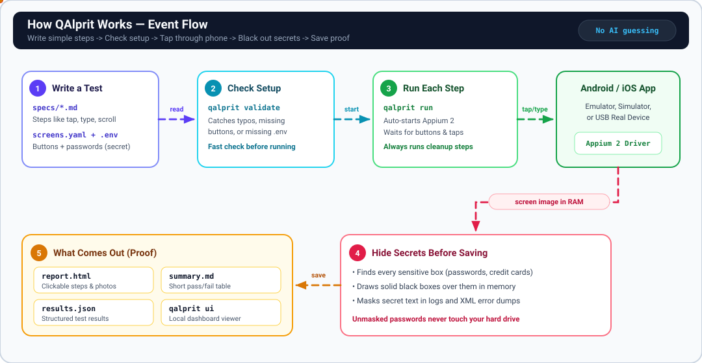

100% Deterministic
Zero LLM API calls at runtime. Specs compile to Appium 2 actions with auto-wait readiness and explicit failure traces.
Appium 2 · Android & iOS · Zero Runtime LLMs
QAlprit turns readable Markdown test specs into deterministic native mobile runs—with RFC 6238 TOTP secrets, in-memory Pillow bounding-box redaction, guaranteed teardown, and self-contained HTML evidence reports.
$ qalprit doctor
[ OK ] Python 3.11.15
[ OK ] Appium v2.11.3
[ OK ] Appium driver: uiautomator2 Installed
[ OK ] Android adb 1.0.41
$ qalprit validate --suite mda --env mda
Validation PASSED: 5 spec(s), 3 flow(s), 0 warning(s).
$ qalprit run --platform android --device android_emulator \
--app apps/mda-demo.apk --env mda --suite mda --retries 1
Starting QAlprit run 20261113_135128_android_mda (5 spec(s))...
Run complete: 4 passed, 1 failed, 0 skipped, 1 flaky
Report HTML : results/20261113_135128_android_mda/report.htmlZero LLM API calls at runtime. Specs compile to Appium 2 actions with auto-wait readiness and explicit failure traces.
Sensitive fields (`secret: true` or `sensitive: true`) are black-filled via Pillow in memory before any PNG touches disk.
QA engineers write YAML front matter specs, reuse 1-level `flows/`, and map shared locators in `screens/screens.yaml`.
Every run emits a single self-contained `report.html`, `summary.md`, `results.json`, failure XML, and `appium.log`.
Interactive Evidence Demo
Explore a sanitized QAlprit run. Filter by outcome or tag, inspect expanded flow steps, and click any step screenshot to verify in-memory Pillow secret redaction.
Authoring Experience
No Python required to author tests. Inspect the exact YAML front matter, 1-level flow, and sensitive locator configuration that power QAlprit.
---
id: MDA-004
title: End-to-end authenticated purchase checkout with sensitive data redaction
tags: [mda, checkout, e2e, regression]
platforms: [android, ios]
reset: clear_data
steps:
- run_flow:
flow: mda/login
params:
username: "${MDA_USER}"
password: "${MDA_PASS}"
- tap: mda_catalog.first_product_image
- tap: mda_product.increase_qty
- tap: mda_product.add_to_cart_button
- tap: mda_nav.open_cart
- tap: mda_cart.checkout_button
- type: {target: mda_payment.card_number_field, value: "${MDA_CARD_NUMBER}", secret: true}
- type: {target: mda_payment.security_code_field, value: "${MDA_CARD_CVV}", secret: true}
- tap: mda_review.place_order_button
- assert_visible: mda_complete.thank_you
- screenshot: mda_order_complete
teardown:
- tap_if_visible: mda_nav.open_menu
- tap_if_visible: mda_nav.menu_logout
expected: Full purchase completes with card/CVV pixels black-filled in memory.
------
name: mda/login
params: [username, password]
steps:
- wait_for_visible: mda_nav.open_menu
- tap: mda_nav.open_menu
- tap: mda_nav.menu_login
- wait_for_visible: mda_login.username_field
- type: {target: mda_login.username_field, value: "${username}"}
- type: {target: mda_login.password_field, value: "${password}", secret: true}
- hide_keyboard: true
- tap: mda_login.login_button
- wait_for_visible: mda_catalog.title
---
# Reusable 1-level login flow
# Expanded inline during execution; nested run_flow inside a flow is rejected by `qalprit validate`.mda_login:
username_field:
android: {id: "com.saucelabs.mydemoapp.android:id/nameET"}
ios: {accessibility_id: "nameET"}
password_field:
android: {id: "com.saucelabs.mydemoapp.android:id/passwordET", sensitive: true}
ios: {accessibility_id: "passwordET", sensitive: true}
login_button: {accessibility_id: "Tap to login with given credentials"}
mda_payment:
card_number_field:
android: {id: "com.saucelabs.mydemoapp.android:id/cardNumberET", sensitive: true}
ios: {accessibility_id: "cardNumberET", sensitive: true}
security_code_field:
android: {id: "com.saucelabs.mydemoapp.android:id/securityCodeET", sensitive: true}
ios: {accessibility_id: "securityCodeET", sensitive: true}environments:
qa:
android_package: com.example.qalprit.qa
ios_bundle_id: com.example.qalprit.qa
default_timeout: 12
variables:
ENV_LABEL: QA
mda:
android_package: com.saucelabs.mydemoapp.android
ios_bundle_id: com.saucelabs.mydemoapp.ios
default_timeout: 12
variables:
ENV_LABEL: DEMOSystem Design
Built with Python 3.10+, Appium 2, Pydantic, Jinja2, and Pillow. Editable Draw.io source
lives in docs/architecture.drawio.
